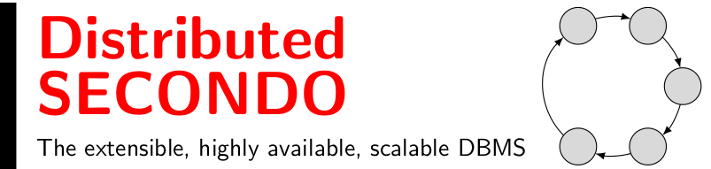
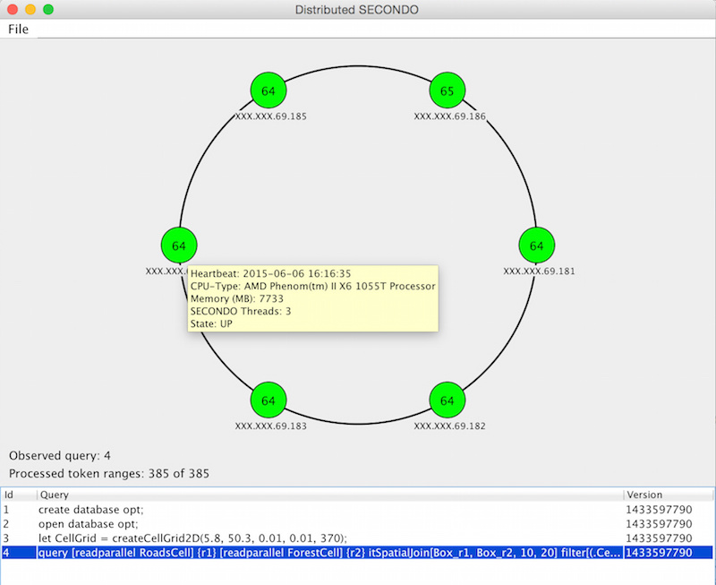
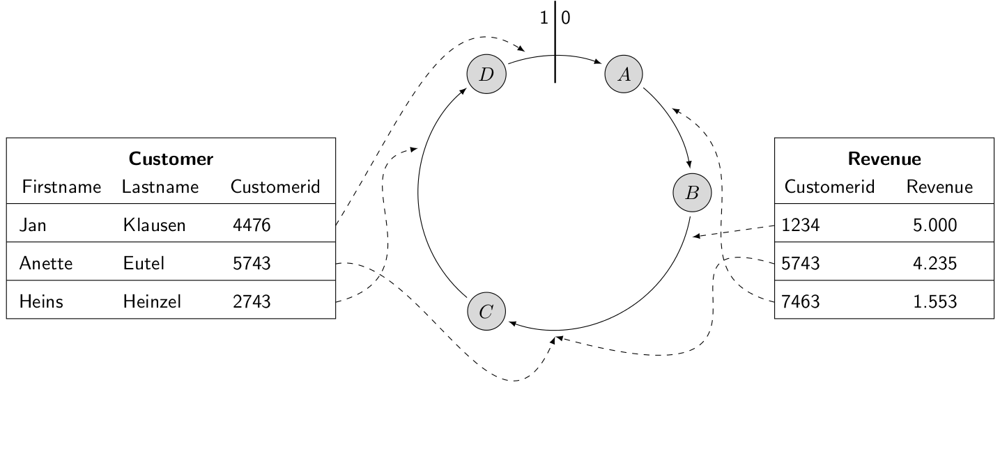
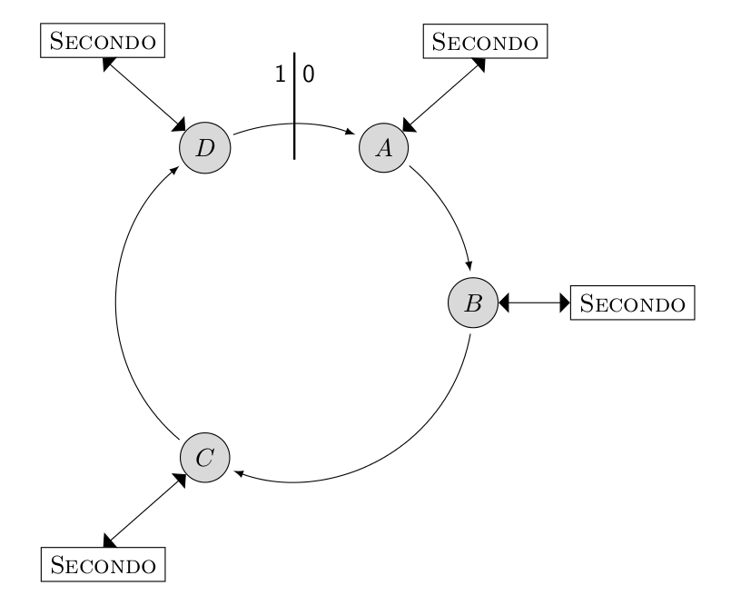
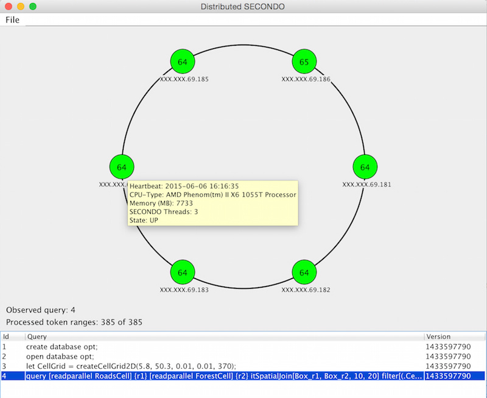
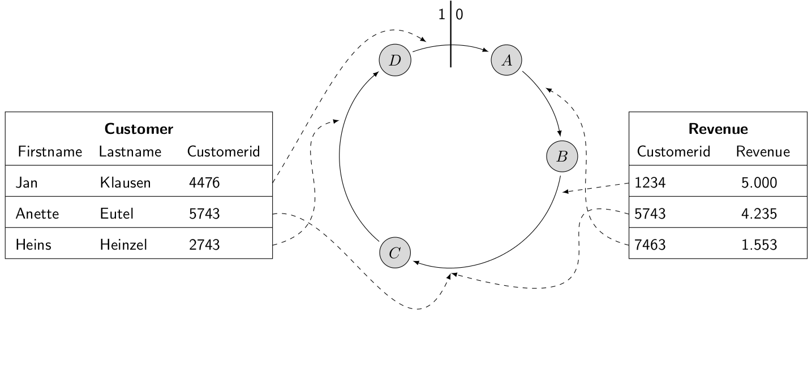
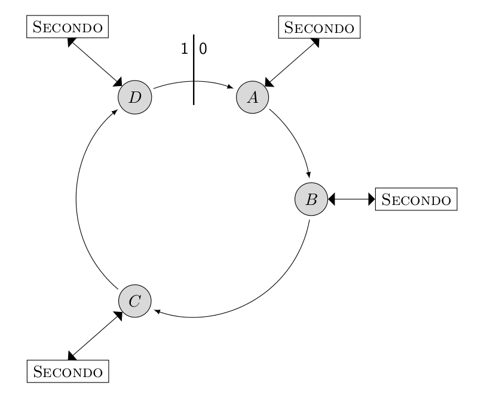

As the name implies, Distributed SECONDO is a distributed system. It consists of three different node types: storage nodes, query processing nodes and management nodes. The storage nodes are running apache Cassandra to provide a highly available data storage. The query processing nodes run SECONDO for query processing and a tool called Query Executor for the distribution of the queries. Each Query Executor instance determines, which queries need to be executed and which part of the input data must be processed by the local SECONDO installation. This decision depends on the state of the storage nodes and on heartbeat messages. The Query Executor can deal with failing processing nodes and it is capable of addressing multiple SECONDO instances at the same time. This is useful if a processing node has more than one core that can be used for query processing. The management nodes run SECONDO too and they are used to import and export data and to specify the queries that should be executed.
Distributed SECONDO ships with a graphical user interface (GUI). The GUI shows the state of the query processing nodes and the progress of a query in real time.

The export of the relations into Cassandra can be done with the following two queries:
 The following step is the most complicated one. It is required to create an execution plan for all query processing nodes. The execution plan consists of two queries. The first query opens a database, after which SECONDO is ready to process queries. The second query imports parts of the relations from Cassandra, executes the join and writes the data back into Cassandra.
After executing these queries, the execution plan is created and each query processing node starts to fetch data, compute a part of the join and to write the result back into Cassandra.
 In the penultimate step, SECONDO waits for the join (query id 2) to complete:
The SECONDO Group: E-Mail
Distributed SECONDO
Distributed SECONDO is an extensible highly available and scalable database management system. It uses Apache Cassandra for data storage and SECONDO as a query processing engine.As the name implies, Distributed SECONDO is a distributed system. It consists of three different node types: storage nodes, query processing nodes and management nodes. The storage nodes are running apache Cassandra to provide a highly available data storage. The query processing nodes run SECONDO for query processing and a tool called Query Executor for the distribution of the queries. Each Query Executor instance determines, which queries need to be executed and which part of the input data must be processed by the local SECONDO installation. This decision depends on the state of the storage nodes and on heartbeat messages. The Query Executor can deal with failing processing nodes and it is capable of addressing multiple SECONDO instances at the same time. This is useful if a processing node has more than one core that can be used for query processing. The management nodes run SECONDO too and they are used to import and export data and to specify the queries that should be executed.
Distributed SECONDO ships with a graphical user interface (GUI). The GUI shows the state of the query processing nodes and the progress of a query in real time.

{kind=link}
An example
SECONDO should perform an equi-join on the two relations Customer and Revenue on the attribute Customerid. It is assumed, that both relations are already stored as relations in SECONDO.The sequential version
The sequential version is very simple. SECONDO has to read both relations, compute the result and store it as a new relation. SECONDO offers a comprehensive set of join operators. The computation can be done with the following query:
let join_result = customer feed {r1} revenue feed {r2} itHashJoin[customerid_r1, customerid_r2] consume;
If you want to learn more about the SECONDO query language, please see the SECONDO website for more information.
The parallel version
In the first step, both relations are exported to Cassandra with the cspread operator. This operator reads all tuples from a relation an stores them into Cassandra. In addition, a partition key must be specified. The partition key determines, which attribute is capable for the placement of the tuple within the logical ring. SECONDO has to join both relations on the attribute customerid, so tuples with the same customerid have to be placed on the same position in the logical ring.The export of the relations into Cassandra can be done with the following two queries:
query customer feed cspread['customer', customerid];
query revenue feed cspread['revenue', customerid];
query revenue feed cspread['revenue', customerid];
 The following step is the most complicated one. It is required to create an execution plan for all query processing nodes. The execution plan consists of two queries. The first query opens a database, after which SECONDO is ready to process queries. The second query imports parts of the relations from Cassandra, executes the join and writes the data back into Cassandra.
query cqueryexecute(1, 'open database opt;');
query cqueryexecute(2, 'query [readparallel customer] {r1} [readparallel revenue] {r2} itHashJoin[customerid_r1, customerid_r2] [write join_result customerid_r1];');
query cqueryexecute(2, 'query [readparallel customer] {r1} [readparallel revenue] {r2} itHashJoin[customerid_r1, customerid_r2] [write join_result customerid_r1];');
After executing these queries, the execution plan is created and each query processing node starts to fetch data, compute a part of the join and to write the result back into Cassandra.
 In the penultimate step, SECONDO waits for the join (query id 2) to complete:
query cquerywait(2);
After the query finishes, the join is computed completely. The result is stored in Cassandra. In the last step, SECONDO needs to import the join result into our SECONDO instance. This can be done with the following query:
let join_result = ccollectquery('join_result', 2) consume;
Installation of Distributed SECONDO
Like SECONDO and Cassandra, Distributed SECONDO is freely available for download. The following steps shows how the system is installed and configured.Prerequisites
At least, one system with Ubuntu 14.04 or Debian 7/8 Linux is required. The software ssh, screen, java, git, gcc and make should be installed on this system.Installing a management node
- Install the required software components:
apt-get install cmake libtool automake git openssh-client screen build-essential screen libssl-dev
- Define and create the Distributed SECONDO home:
export DSECONDO_DIR=~/dsecondo/
mkdir -p $DSECONDO_DIR
mkdir -p $DSECONDO_DIR/secondo
- Download the last SECONDO version (at least version 4.0.0 is required).
- Configure and install SECONDO as described here.
- Add these lines to your .secondorc and adjust the names of the QPNs an SNs. The placeholder %%YOUR_DSECONDO_DIR%% needs to be replaced with the full path of the directory $DSECONDO_DIR. The placeholder %%YOUR_QPN_INSTALL_DIR%% needs to be replaced with the name of the directory were SECONDO should be installed on the QPNs (e.g. /opt/dsecondo).
###
# DSECONDO
###
export DSECONDO_DIR=%%YOUR_DSECONDO_DIR%%
export DSECONDO_QPN_DIR=%%YOUR_QPN_INSTALL_DIR%%
# Locate the libuv and cpp-driver installation dir
if [ -d $DSECONDO_DIR/driver/libuv ]; then
export LD_LIBRARY_PATH=$DSECONDO_DIR/driver/libuv/.libs:$LD_LIBRARY_PATH
export LD_LIBRARY_PATH=$DSECONDO_DIR/driver/cpp-driver:$LD_LIBRARY_PATH
else
export LD_LIBRARY_PATH=$DSECONDO_QPN_DIR/driver/libuv/.libs:$LD_LIBRARY_PATH
export LD_LIBRARY_PATH=$DSECONDO_QPN_DIR/driver/cpp-driver:$LD_LIBRARY_PATH
fi
# DSECONDO - Hostnames of the QPNs
export DSECONDO_QPN="node1 node2 node3 node4 node5 node6"
# DSECONDO - Hostnames of the SNs
export DSECONDO_SN="node1 node2 node3 node4 node5 node6"
- Reread your .secondorc
source ~/.secondorc
- Download, patch, build and install the cpp-driver and his dependencies.
cd $DSECONDO_DIR/Algebras/Cassandra/tools
./manage_dsecondo.sh install_driver -
Add the following lines to the file makefile.algebras to enable the Cassandra algebra.
ALGEBRA_DIRS += Cassandra
ALGEBRAS += CassandraAlgebra
ALGEBRA_DEPS += uv cassandra
ALGEBRA_INCLUDE_DIRS += $(DSECONDO_DIR)/driver/cpp-driver/include
ALGEBRA_INCLUDE_DIRS += $(DSECONDO_DIR)/driver/libuv/include
ALGEBRA_DEP_DIRS += $(DSECONDO_DIR)/driver/libuv/.libs
ALGEBRA_DEP_DIRS += $(DSECONDO_DIR)/driver/cpp-driver -
Build SECONDO:
cd $DSECONDO_DIR/secondo
make -
Add the following lines to the configuration file of SECONDO (SecondoConfig.ini). The placeholder %%SN_IP%% has to be replaced with the IP of one of the storage nodes.
[CassandraAlgebra]
CassandraHost=%%SN_IP%%
CassandraKeyspace=keyspace_r3
CassandraConsistency=QUORUM
CassandraDefaultNodename=node1
Installing the query processing nodes
The Management Node is responsible for installing the query processing nodes. Execute the following steps to install these nodes:- On the management node, change into the tools directory:
cd $DSECONDO_DIR/secondo/Algebras/Cassandra/tools
- Run the QPN node installer. The installer will copy your SECONDO installation and the cpp-driver on the QPNs.
./manage_dsecondo.sh install
Installing the storage nodes
- On the management node, change into the tools directory:
cd $DSECONDO_DIR/secondo/Algebras/Cassandra/tools
- Run the storage node installer. The installer will download and unpack Cassandra. In addition a basic configuration is applied.
./manage_cassandra.sh install
- Start the storage nodes:
./manage_cassandra.sh start
- Create the default keyspaces (keyspace_r1 - keyspace_r6) and system tables. The Keyspace keyspace_r1 has a replication factor of 1, keyspace_r6 has a replication factor of 6.
./manage_cassandra.sh init
Related work
With Parallel SECONDO, another SECONDO based prototype for distributed processing of huge amounts of data exists. Parallel SECONDO couples Hadoop with SECONDO to achieve scalability and data distribution. In contrast to Distributed SECONDO, Parallel SECONDO does not focus on data updates and its architecture contains a master node, which is a single point of failure.Documentation / Papers
- J.K. Nidzwetzki and R.H. Güting, Distributed SECONDO: A highly available and scalable system for spatial data processing, 14th International Symposium on Spatial and Temporal Databases, 2015, DOI 10.1007/978-3-319-22363-6_28 (Poster).
- J.K. Nidzwetzki, Entwicklung eines skalierbaren und verteilten Datenbanksystems - Auf Basis von Apache Cassandra und SECONDO, Springer BestMasters, 2016, ISBN 978-3-658-12443-4, DOI 10.1007/978-3-658-12444-1 (only available in german).
- J.K. Nidzwetzki and R.H. Güting, Distributed SECONDO: An extensible and scalable database management system, Distributed and Parallel Databases, 2017, DOI 10.1007/s10619-017-7198-9 (Technical report - preliminary version).
About us
Our group is a database research group at FernUniversität Hagen, Germany, led by Prof. Dr. Ralf Hartmut Güting. The group focuses on database technologies for non-standard data types, especially for moving objects data and on extensible database systems. During the last 10 years, the group has developed the SECONDO system, an open-source extensible DBMS prototype.Contact
Main developer: Jan Kristof NidzwetzkiThe SECONDO Group: E-Mail